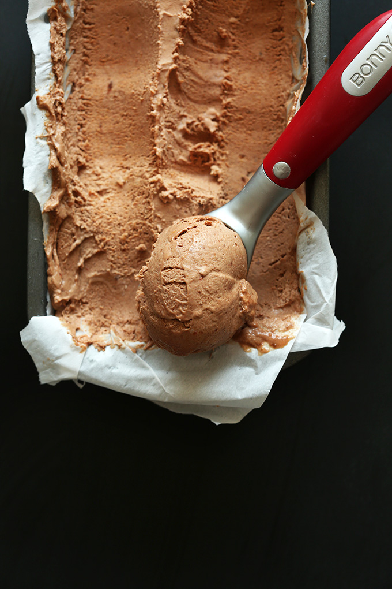

No-Churn Chocolate Ice Cream

No Churn Vegan Chocolate Ice Cream
5-ingredient no-churn vegan chocolate ice cream that has all the
creaminess, flavor,
and richness of the real thing! Naturally sweetened, vegan, and
gluten-free.
Ingredients
-
2 14-ounce cans coconut cream OR full- fat coconut milk (chilled
overnight in the fridge // I like Trader Joe’s coconut cream or Thai
Kitchen coconut milk)
- 2/3 cup unsweetened cocoa or cacao powder powder
-
14-16 ounces pitted dates (if not sticky and moist, soak in warm water
for 10 minutes then drain)
- 1 tsp pure vanilla extract
- 1/2 cup unsweetened almond milk
Instructions
- Place a large mixing bowl in the freezer to chill for 10 minutes.
-
In the meantime, add moist, pitted dates to a food processor and process
until small bits remain. Then add hot water a little at a time until it
forms a thick paste. Set aside.
-
Without tipping the cans, scoop out the coconut cream from the cans of
coconut cream OR coconut milk, reserving the clear liquid for other
uses. Place in chilled mixing bowl.
-
NOTE: If you’re using coconut milk, you’ll likely use
less sweetener because there’s less volume.
-
Using a mixer, whip until creamy and smooth. Then add cocoa powder,
vanilla, almond milk, and half of the date paste. Whip until fully
incorporated.
-
Taste and adjust flavors as needed. I ended up adding most of the date
paste and a little more cocoa powder.
-
Transfer to a parchment-lined freezer-safe container and cover loosely
with plastic wrap, then foil to help freeze.
-
You can take this out in a couple of hours for a chilled mousse-like ice
cream. Freeze overnight for a firmer ice cream.
-
Set out for at least 20 minutes prior to scooping, and use a scoop
warmed under hot water for a proper scoop.
- Will keep in the freezer for up to one week, but best when fresh.